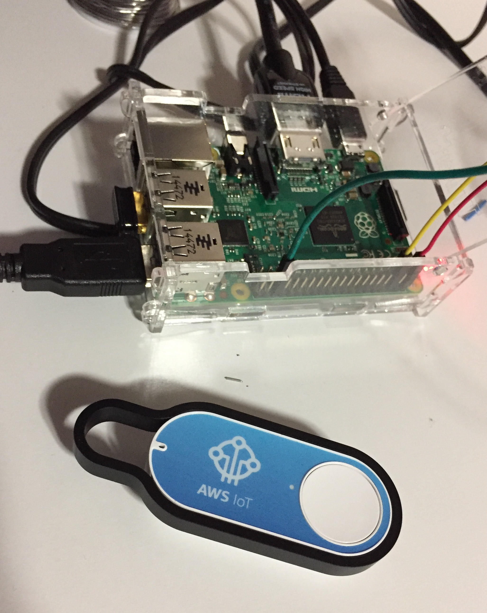
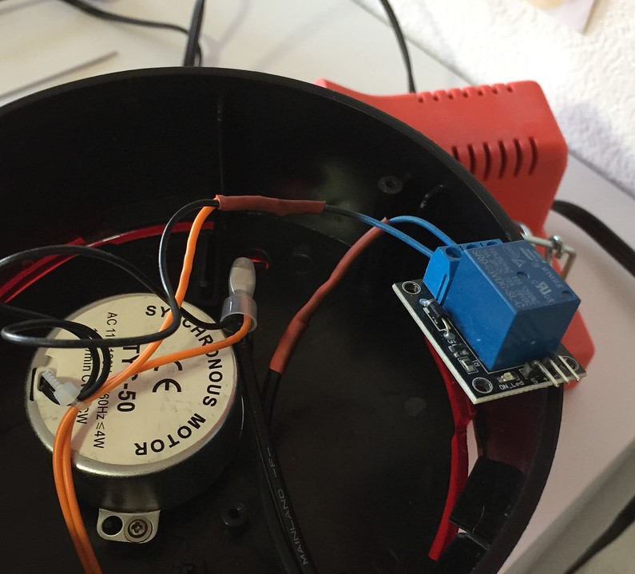
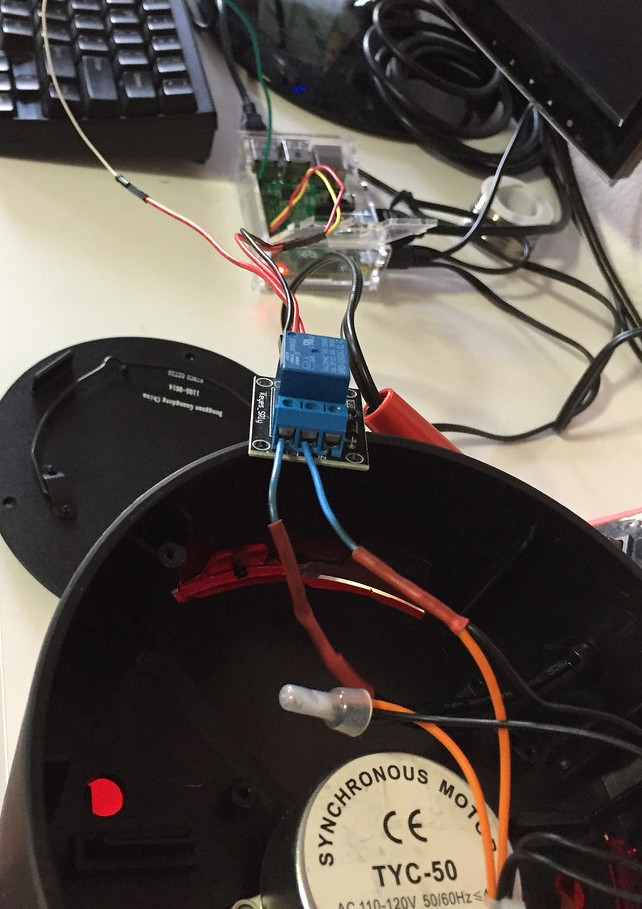
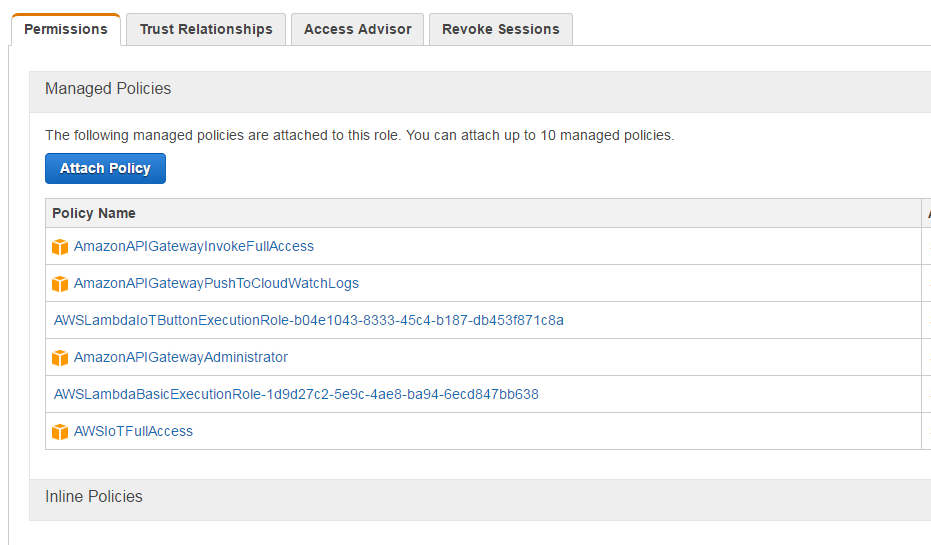

awsIOT
Introduction
To get my feet wet with the AWS/IOT platform, I setup a rotating red light that is controlled via an amazon button. I'm using a raspberry pi as the end point that controls the red light, and when you click the IOT button, it activates or deactivates the light. I also ended up setting up Ansible to configure the PI and push the software: piAnsible
Interfacing the pi to the relay
I used the keyes_rly relay module connected to the raspberry pi to control the red flashing light. More information on hooking up the relay link

Getting nodejs to talk to the relay
Simple Client
First install all the dependencies:1 2 3 4 5 | sudo apt-get purge nodejs npm curl -sL https://deb.nodesource.com/setup | sudo bash - sudo apt-get install -y nodejs npm install rpi-gpio npm install aws-iot-device-sdk |
and then the script to listen for an event and trigger ping 36 on the pi.
1 2 3 4 5 6 7 8 9 10 11 12 13 14 15 16 17 18 19 20 21 22 23 24 25 26 27 28 29 30 31 32 33 34 35 36 37 38 39 40 41 42 43 44 45 46 47 48 49 50 51 52 53 54 55 56 57 58 59 60 61 | // https://github.com/aws/aws-iot-device-sdk-js // https://www.npmjs.com/package/rpi-gpio var awsIot = require('aws-iot-device-sdk'); var gpio = require('rpi-gpio'); gpio.setup(36, gpio.DIR_OUT); var device = awsIot.device({ keyPath: "connect_device_package/testpi.private.key", certPath: "connect_device_package/testpi.cert.pem", caPath: "connect_device_package/root-CA.crt", clientId: "testpi", region: "us-west-2", }); device.on('connect', function() { console.log('connect'); //device.subscribe('topic_1'); // http://docs.aws.amazon.com/iot/latest/developerguide/thing-shadow-mqtt.html device.subscribe('$aws/things/testpi/shadow/update') device.subscribe('$aws/things/testpi/shadow/update/delta') }); device.on('close', function() { console.log('close'); }); device.on('reconnect', function() { console.log('reconnect'); }); device.on('offline', function() { console.log('offline'); }); device.on('error', function(error) { console.log('error', error); }); device.on('message', function(topic, payload) { // console.log('message', topic, JSON.parse(payload.toString())); var data = JSON.parse(payload.toString()); if ( data['state']['switch'] == "on") { console.log("turn the light on"); gpio.write(36, true, function(err) { if (err) throw err; console.log('Written to pin'); }); } else { console.log("turn the light off"); gpio.write(36, false, function(err) { if (err) throw err; console.log('Written to pin'); }); } }); |
Lambda Function
if you are doing this outside of lambda, make sure you run "aws configure" before testing. Also, make sure the timeout value is 10 seconds or higher. I had the timeout set to 3 seconds initially, and sometimes the event would fire and sometimes It would not.You need to add this function, and then create a security profile that allows these permissions:
1 2 3 4 5 6 7 8 9 10 11 12 13 14 15 16 17 18 19 20 21 22 23 24 25 26 27 | import boto3 import json # http://boto3.readthedocs.io/en/latest/reference/services/iot-data.html def lambda_handler(event, context): client = boto3.client("iot-data") response = client.get_thing_shadow( thingName='testpi' ) d = json.loads( response['payload'].read().decode('UTF-8') ) if d['state']['desired']['switch'] == "on": data = {"state" : { "desired" : { "switch" : "off" }}} else: data = {"state" : { "desired" : { "switch" : "on" }}} mypayload = json.dumps(data) response = client.update_thing_shadow( thingName='testpi', payload=mypayload ) return "ok" |
To make the function work, it'll need access, go into aws dashboard -> My security Dashboard -> Roles -> and create a role that looks like this (not sure if all of this is required.):

It will also need a trigger, that was hopefully setup for you when you setup the AWS IOT button.
Other links
publish